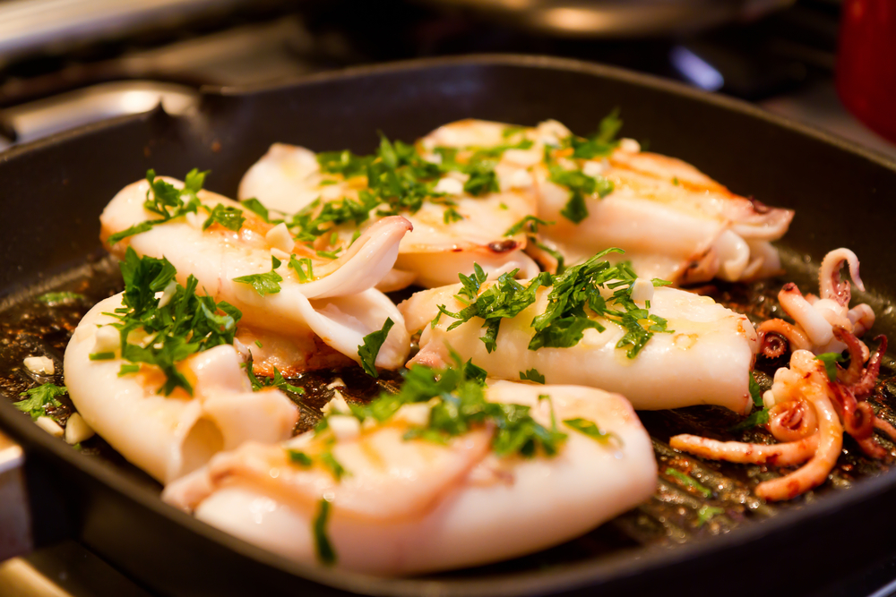
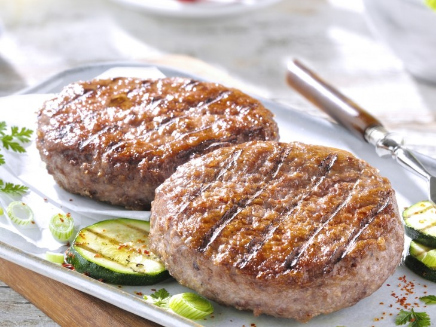

- 350 gr cubetti di pollo
- 200 gr pomodorini
- 100 gr olive nere denocciolate
- q.b. rosmarino
- q.b. olio
- q.b. sale e pepe
Inizia lavando e tagliando a metà i pomodorini. Fai scaldare una padella sul fuoco e cuoci le fette di pollo. Una volta cotte tagliale a tocchetti e, infine, condisci con un pizzico di sale, un filo d’olio, un pizzico di pepe e una manciata di rosmarino. Impiatta il pollo ben cotto con i pomodorini e le olive nere denocciolate.
Questo è un secondo piatto da leccarsi i baffi!
Seppie arrostite

- 1 kg seppie
- q.b. olio evo
- q.b. sale e pepe
- 1 spicchio aglio
Pulisci le seppie e lavale bene. Prepara il condimento con 4 cucchiai di olio d’oliva, il prezzemolo tritato e lo spicchio di aglio schiacciato.
Metti a cuocere sulla griglia le seppie 5 minuti per lato, infine aggiungi un pizzico di sale e poco pepe. Metti le seppie cotte sul piatto da portata e condiscile con la salsina preparata in precedenza, amalgamando bene.
Se lo gradisci, puoi aggiungere il succo di mezzo limone.
Se hai poco tempo, questo secondo piatto fa al caso tuo!
Salmone al limone

- 2 tranci di salmone
- succo di limone
- 1/2 spicchio aglio
- q.b. sale e pepe
- q.b. prezzemolo
- 100 ml olio evo
In una ciotola versa l’olio d’oliva, il succo di un limone spremuto e mescola per emulsionare i due liquidi. Aggiungi il pepe ed il sale a piacere, poi mezzo spicchio di aglio sbucciato e il prezzemolo tritato. Mescola nuovamente per amalgamare bene tutti gli ingredienti. Quindi rivesti una teglia con carta forno e disponi i tranci di salmone dopo aver tolto le spine più evidenti. Spennella ciascuna fetta di pesce con l’emulsione di olio e limone e infornale a 220 gradi per 10 minuti circa. Fai attenzione a non far cuocere troppo il pesce in forno! A fine cottura aggiungi ancora l’emulsione sul salmone e impiattalo.
Ne andranno pazzi tutti!
Hamburger di carne bovina

- 300 gr macinato fresco
- q.b. sale e pepe
- 1 uovo
- 50 gr pangrattato
- spolverata formaggio grattugiato
Per realizzare gli hamburger di carne bovina devi mescolare con le mani o con una forchetta il macinato fresco con un uovo medio. Quindi aggiungi una manciata di sale, un pizzico di pepe ed il pangrattato. Amalgama ancora una volta tutti gli ingredienti. Infine aggiungi una spolverata di formaggio grattugiato e mescola per un’ultima volta. Fai quindi delle palline di impasto da circa 100 grammi ciascuna e poi tendi a dare la forma degli hamburger.
A questo punto sono pronti per essere cotti in padella.
Aggiungi un contorno veloce agli hamburger e la cena è servita!